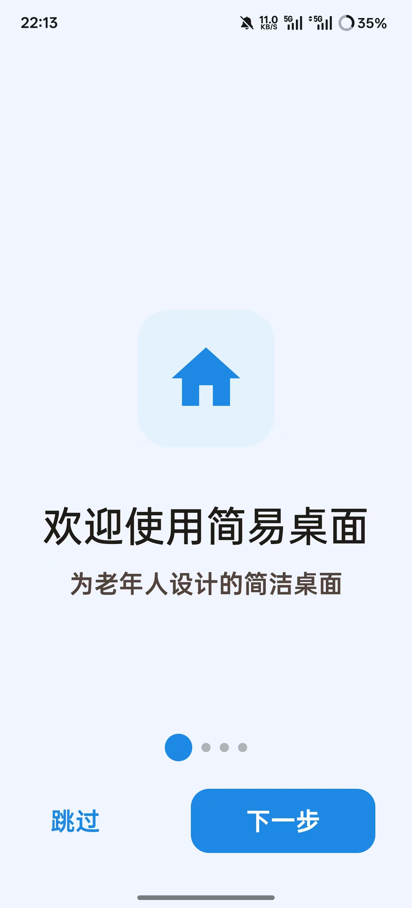
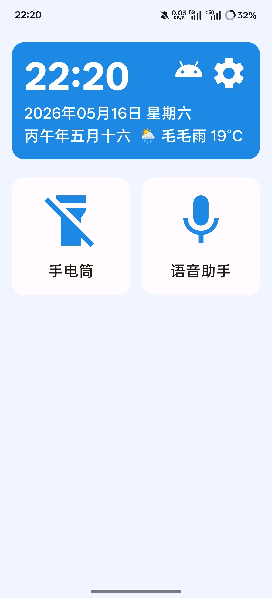
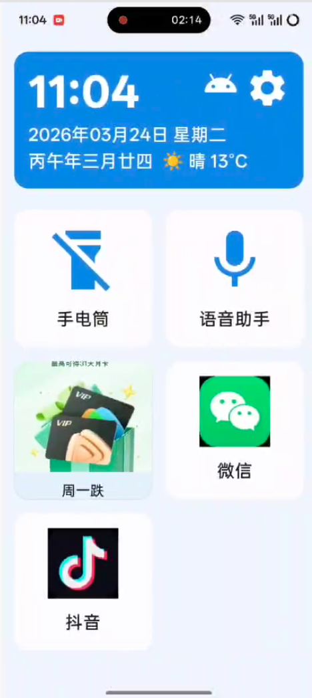
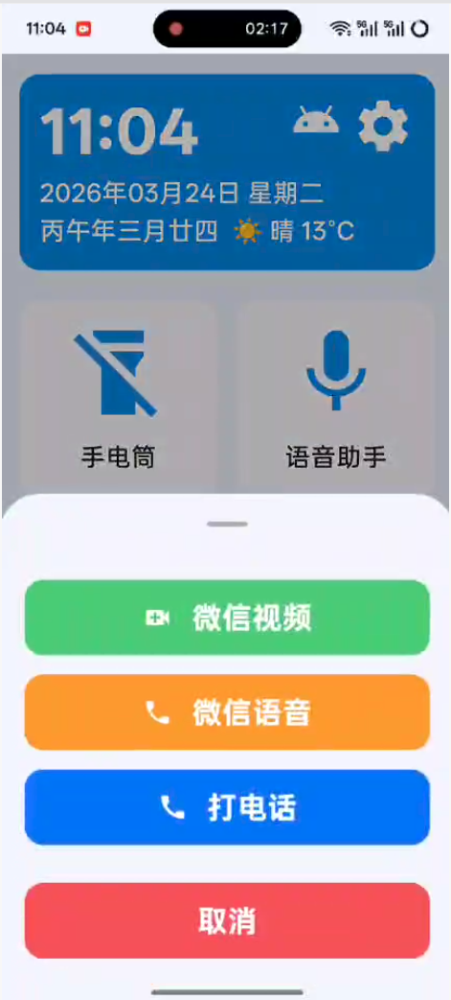
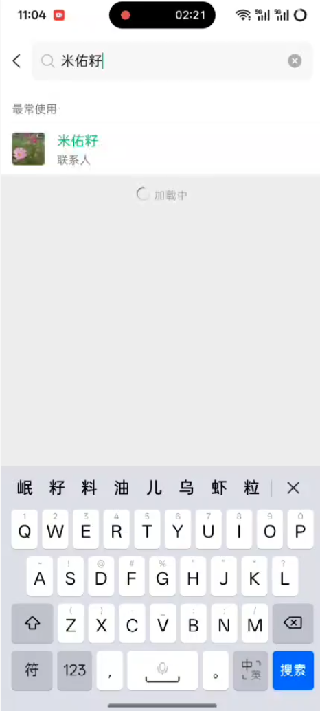
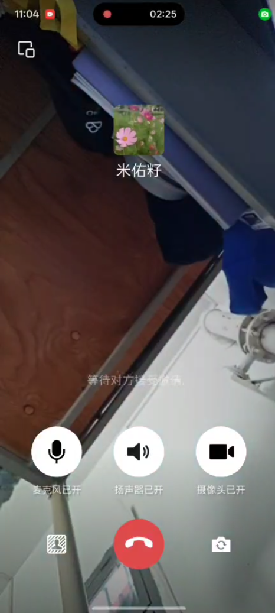

Design and Implementation of an Android Interactive Desktop for the Elderly
大尺寸时钟天气卡 + 联系人卡片 + 应用卡片
手电筒 / 语音助手快捷入口
小/中/大三档，覆盖 15种 字体角色
实时切换 82ms 响应，无需重启
经典蓝 / 暖心橙 + 黑底白字高对比度
CompositionLocal 全局主题传递
Resource-ID 主通道
+ 文本内容备通道
高效 + 稳健
主动释放UI焦点
压制悬浮窗干扰
防止焦点争抢
单状态停留 >5s
强制终止 + 安全重置
防止无限循环

首次启动

主屏界面

桌面触发

呼叫选项

搜索匹配

通话建立
| 冷启动时间 | 1.15s |
| 字号切换响应 | 82ms |
| 主屏渲染帧率 | 60.1 fps |
| 微信直拨成功率 | 99.1% |
| WiFi自愈成功率 | 100% |
恳请各位老师批评指正
感谢李娜老师、李林峰老师的悉心指导
感谢通信工程专业全体老师的培养与教导
感谢同窗好友的陪伴与家人的支持
感谢开源社区的无私贡献